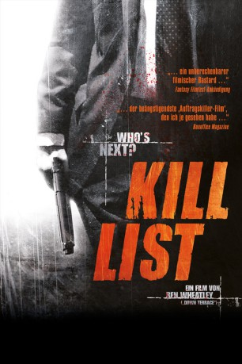

#3987 Kill List
 
 IMDB-Wertung: 6.3 / 10
IMDB-Wertung: 6.3 / 10  Metascore: 0
Metascore: 0 
Der arbeitslose Ex-Soldat und einstige Auftragskiller Jay und seine Frau Shel haben Geldsorgen, unter denen die junge Ehe zu zerbrechen droht. Bei einem gemeinsamen Abendessen macht sein bester Kumpel Gal (ebenfalls Auftragskiller) Jay ein Angebot, das die finanzielle Situation der Familie entscheidend verbessern könnte: drei weitere “Hits”, die der Auftraggeber geradezu fürstlich entlohnt. Jay merkt schnell, dass es sich nicht um eine gewöhnliche Todesliste handelt; und als sich bei einer Zielperson eine Kiste mit Snuff-Filmen findet, gerät seine Welt aus den Fugen und trudelt unaufhaltsam in den Untergang.
Jahr: 2011
Dauer: 95 Minuten
FSK: 18
Land: England Studio: Senator Home EntertainmentTonspuren: DTS - ,
Untertitel: Deutsch,
Auflösung: 1080p (1920x816) Größe: 8478 MB
Genre: Thriller, Horror, Krimi
Regisseur: Ben Wheatley
Drehbuch: Gregg Rossen
Soundtrack:
Darsteller:
 Neil Maskell als Jay
Neil Maskell als Jay MyAnna Buring als Shel
MyAnna Buring als Shel Michael Smiley als Gal
Michael Smiley als Gal- Emma Fryer als Fiona
 Struan Rodger als The Client
Struan Rodger als The Client Ben Crompton als Justin
Ben Crompton als Justin- Robin Hill als Stuart
- Gareth Tunley als The Priest
- Robert Hill als High Priest
 Alice Lowe als Radio Reporter
Alice Lowe als Radio Reporter Steve Oram als Radio Reporter
Steve Oram als Radio Reporter- Harry Simpson als Sam
- Esme Folley als Hotel Receptionist
- Gemma Lise Thornton als Kiera
- Zoe Thomas als Hotel Waitress
- Jamelle Ola als Hotel Receptionist 2
- Mark Kempner als The Librarian
- Damien Thomas als The Doctor
- Lora Evans als Thorn Blindfold Woman
- Rebecca Holmes als The Bride
- James Nickerson als MP
- David Bowen als Father of the Bride
 Sara Dee als News Reader
Sara Dee als News Reader- Chaelyn Allcock als Procession Member
- Jennifer Andrews als
- James Bateson als Procession Member
- Ken Birch als
- Janice Bird als
- Alex Blake als Procession Member
- Edward Booth als
- John Chappell als Procession Member
- Joan Cooper als
- Lynn Copperfield als
- Frenchie Cowley als Procession Member
- Glynn Davies als Procession Member
- David Charles Denwood als
- Daphne Eland als
- Shane Fitzsimmons als Procession Member
- Katya Galiana-Philip als Procession Member
- Brian Gaugan als Procession Member
- Lorna Gladhill als Procession Member
- Karl Halliwell als Procession Member
- Sharron Hardy als
- Alice Harrand als Procession Member
- Bianca Hay als Procession Member
- Josh Honeybourne als Procession Member
- Ciaran Humphries als Procession Member
- Gareth James als Procession Member
- Lucie James als Procession Member
- Alex Janczenia als Procession Member
Datei: X:\FSK18-2011\Kill List (2011, FSK18, 1920x816).mkv seit 08.07.2016
Festplatte: FSK18
 Es gibt insgesamt 30 Filme in der Gruppe 'FSK18-2011'
Es gibt insgesamt 30 Filme in der Gruppe 'FSK18-2011'